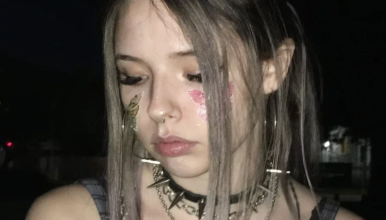

.Kagura.

✦ かぐら ✦
hola q onda gatos, soy lu tengo 22 años siendo leonina proveniente de argentina amo a diana y a messi, y odio a los hombres (menos a messi) yyyyyyyy vos quien chota sos?
♪ chrome ♪